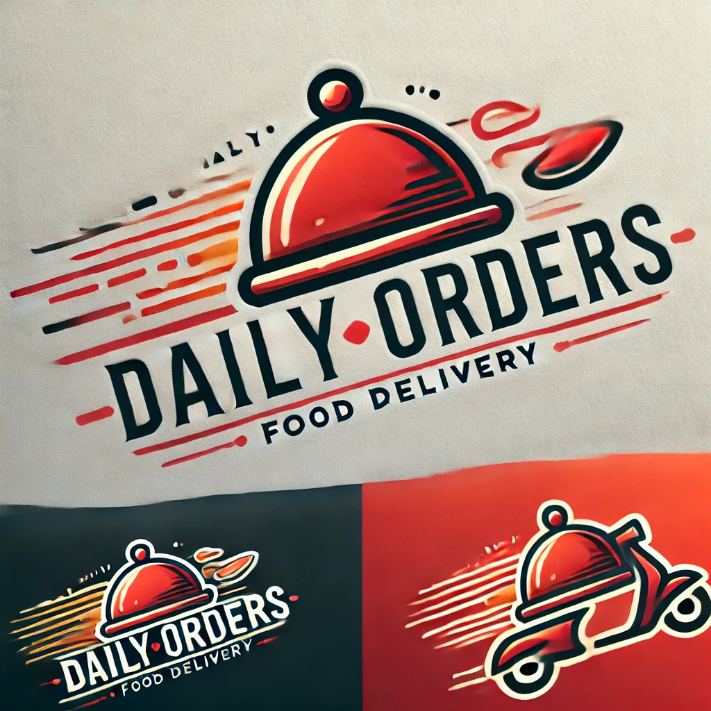

The Rise of Online Food Ordering

Online food ordering has transformed how we enjoy our meals. With just a few clicks, you can get your favorite dishes delivered straight to your doorstep. This industry has grown exponentially, thanks to mobile apps, real-time tracking, and contactless deliveries. Whether it's a midnight craving or a family dinner, food delivery apps make life easier.
How Daily Orders Simplifies Your Life

Daily Orders is built for convenience, ensuring fast and reliable food delivery. With an easy-to-use interface, personalized recommendations, and secure payment options, we make sure you get the best experience. Whether you're at home, work, or on the go, Daily Orders keeps you covered.
Future of Food Delivery: What's Next?

The food delivery industry is evolving rapidly with AI-powered suggestions, automated kitchens, and drone deliveries. In the near future, you might even receive your meal through robotic delivery systems! Daily Orders is committed to bringing you the latest innovations to enhance your food ordering experience.